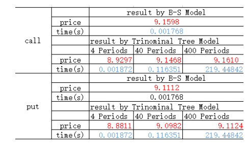
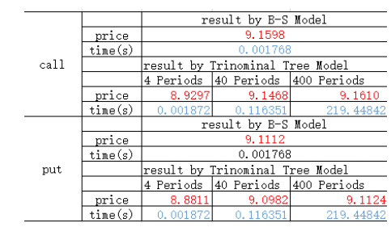

Project 1
a
计算苹果股票1980年至今的平均年收益率和年波动率，收益率为 0.1534，波动率为 0.4782 。代码如下：
P1=log(P); %P是调整后的股票价格，P1是对数价格
R=-diff(P1,1);
aR=252*mean(R);
sigma=sqrt(var(R)*252);
b
用三叉树计算欧式期权的价格，代码如下：
function [C,P]=Etrimi(N)
s0=99.62;
k=100;
sigma=0.4782;
r=0.0185;
T=0.2322;
dt=T/N;
m=1;
u=exp(sigma*sqrt(2*dt));
d=1/u;
pu=((sqrt(exp(r*dt))-sqrt(d))/(sqrt(u)-sqrt(d)))^2;
pd=((sqrt(u)-sqrt(exp(r*dt)))/(sqrt(u)-sqrt(d)))^2;
pm=1-pu-pd;
c=0;
p=0;
for i =0:N
for j=0:N-i
s=s0*u^i*d^j;
c=c+max((s-k),0)*pu^i*nchoosek(N,i)*pd^j*nchoosek(N-i,j)*pm^(N-i-j);
p=p+max(-(s-k),0)*pu^i*nchoosek(N,i)*pd^j*nchoosek(N-i,j)*pm^(N-i-j);
end
end
C=c*exp(-r*T);
P=p*exp(-r*T);
c

精确度：由上表可知，三叉树在N=40的时候，得到的结果与bls公式的结果相比，误差仅为0.01左右。
效率：通过多次运行程序，观察得，当N小于100时，运行效率较高；N大于100时，程序效率明显下降。
d
精确度：由上表可知，在N较小的情况下，三叉树的精确度更高，但随着N的增大，两者精确度变得很接近。
效率：当N较小的时候，运行时间二叉树与三叉树的差距不大；但N大于100时，二叉树快许多。
e
期权（看涨）的市场价格为4.50，而程序运行结果为9.16左右。同时B-S公式计算价格也与三叉树计算价格相近，而这两种方式计算的都是期权的真实价值，并不是计算的整个路径。市场期权价格在任一时刻是随机的，但最终期权的市场价值会回归真实价值。
对于如何提升价格的准确性，一、标的资产市场价格可能不服从对数正态分布，为了针对尖峰厚尾性，很多文献中采用的是Beta分布；
二、该三叉树模型基于二叉树模型，模型的不准确性可能是由于u、d设置的不合理导致的。
f
三叉树计算美式期权，代码如下：
function [C,P]=AmericanTT(N)
S0=100;
K=100;
r=0.05;
T=1;
sigma=0.3;
dt=T/N;
u=exp(sigma*sqrt(2*dt));
m=1;
d=1/u;
p1=((exp(0.5*r*dt)-d^0.5)/(u^0.5-d^0.5))^2;
p3=((u^0.5-exp(0.5*r*dt))/(u^0.5-d^0.5))^2;
p2=1-p1-p3;
S=[];
S(1,1)=S0;
INCOME_C=[];
INCOME_C(1,1)=0;
INCOME_P=[];
INCOME_P(1,1)=0;
for i=2:N+1
for j=0:i-1
for t=0:i-j-1
S(i,2*t+j+1)=S0*d^t*m^j*u^(i-1-t-j);
INCOME_C(i,2*t+j+1)=max(S(i,2*t+j+1)-K,0);
INCOME_P(i,2*t+j+1)=max(K-S(i,2*t+j+1),0);
end
end
end
F_C=[];
F_P=[];
F_C(N+1,:)=INCOME_C(N+1,:);
F_P(N+1,:)=INCOME_C(N+1,:);
for i=N:(-1):1
for j=1:2*(i-1)+1
F_C(i,j)=(p1*F_C(i+1,j)+p2*F_C(i+1,j+1)+p3*F_C(i+1,j+2))*exp(-r*dt);
F_C(i,j)=max(F_C(i,j),INCOME_C(i,j));
F_P(i,j)=(p1*F_P(i+1,j)+p2*F_P(i+1,j+1)+p3*F_P(i+1,j+2))*exp(-r*dt);
F_P(i,j)=max(F_P(i,j),INCOME_P(i,j));
end
end
C=F_C(1,1);
P=F_P(1,1);
g
用二叉树计算障碍期权，代码如下：
function [C,P]=barrier(B,N)
s0=100;
k=100;
sigma=0.4;
r=0.05;
T=1;
dt=T/N;
u=exp(sigma*sqrt(dt));
d=1/u;
pu=(exp(r*dt)-d)/(u-d);
pd=(u-exp(r*dt))/(u-d);
m=ceil(log(B/s0)/log(u));
c=[];
p=[];
s=[];
A=[];
s(1)=s0*u^N;
c(1)=max(s(1)-k,0)*pu^N;
A(1)=1;
for i =2:N+1
s(i)=s0*d^(i-1)*u^(N-i+1);
U=[];
for j=1:i
U(j)=N+2-i-j;
if j>=2
for t=1:j-1
if U(t)>=m && U(t+1)<m
if N+2-i-j>=0
A(i)=nchoosek(N+2-i-j+t-1,t-1);
break
else
A(i)=0;
end
else
A(i)=nchoosek(N,N+1-i);
end
end
else
A(i)=0;
end
end
c(i)=max((s(i)-k),0)*pu^(N+1-i)*A(i)*pd^(i-1);
p(i)=max(-(s(i)-k),0)*pu^(N+1-i)*A(i)*pd^(i-1);
end
C=sum(c)*exp(-r*T);
P=sum(p)*exp(-r*T);
Project 1
a
计算苹果股票1980年至今的平均年收益率和年波动率，收益率为 0.1534，波动率为 0.4782 。代码如下：
b
用三叉树计算欧式期权的价格，代码如下：
c

精确度：由上表可知，三叉树在N=40的时候，得到的结果与bls公式的结果相比，误差仅为0.01左右。
效率：通过多次运行程序，观察得，当N小于100时，运行效率较高；N大于100时，程序效率明显下降。
d
精确度：由上表可知，在N较小的情况下，三叉树的精确度更高，但随着N的增大，两者精确度变得很接近。
效率：当N较小的时候，运行时间二叉树与三叉树的差距不大；但N大于100时，二叉树快许多。
e
期权（看涨）的市场价格为4.50，而程序运行结果为9.16左右。同时B-S公式计算价格也与三叉树计算价格相近，而这两种方式计算的都是期权的真实价值，并不是计算的整个路径。市场期权价格在任一时刻是随机的，但最终期权的市场价值会回归真实价值。 对于如何提升价格的准确性，一、标的资产市场价格可能不服从对数正态分布，为了针对尖峰厚尾性，很多文献中采用的是Beta分布；
二、该三叉树模型基于二叉树模型，模型的不准确性可能是由于u、d设置的不合理导致的。
f
三叉树计算美式期权，代码如下：
g
用二叉树计算障碍期权，代码如下：